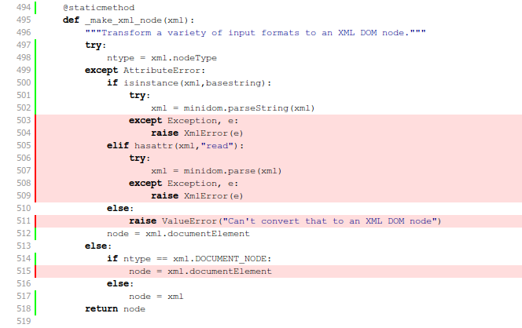

I've got a little bit of downtime at the moment, and I'm determined to spend it keeping my Python skills and projects up to date. First on the list: testing.
Almost all of my open-source projects come with automated tests of some kind. Some are woefully under-tested (m2wsgi, myppy) while others have collected a test case for just about every feature (pyenchant, esky). But they could all stand to benefit from a little more testing discipline.
If you have any of your own python projects, ask youself: do they work on older versions of python? How about on 2.7? On 3.2? How about on Windows or OSX? Are you sure?
I want to be able to answer a confident yes to all these questions, so I'm embarking on a rather ambitious plan over the coming months: full test suites, with 100% code coverage, tested on Linux, Windows and OSX, across python 2.5, 2.6, 2.7 and 3.2.
{% endmark %}I'll probably fail at such a lofty goal. That's OK. 100% test coverage is no panacea anyway. But my code will be better for the effort and I'll add some powerful new toys to my toolkit along the way:
My target for today was the dexml project. It's a pretty small codebase and it already had a good suite of tests, so it seemed like a very non-threatening place to start. Here's the testing status of the 0.4.1 release
{% syntax console %}$> # It contains around 1300 lines of code $> sloccount dexml/ | grep -C1 SLOC-by-Language SLOC Directory SLOC-by-Language (Sorted) 1279 dexml python=1279 $> $> # Almost a third of which are for the tests $> sloccount dexml/test.py | grep -C1 SLOC-by-Language SLOC Directory SLOC-by-Language (Sorted) 417 top_dir python=417 $> $> # Of which there are 20, and they all pass $> nosetests ................................... ---------------------------------------------------------------------- Ran 20 tests in 0.265s OK $>{% endsyntax %}I know that 20 tests probably doesn't sound like many, but this is a small library and each test covers a fair bit of ground. Besides, there's almost half as much code for testing as there is code for the module itself, so it must be pretty well tested. Right? Let's find out...
To see what sort of test coverage we've actually got, let's run nose inside Ned Batchelder's coverage tool:
{% syntax console %}$> pip install coverage ... ... uninteresting output ... ... $> $> # coverage can only run python scripts, so we $> # have to pass it the full path to nosetests $> coverage run `which nosetests` .................... ---------------------------------------------------------------------- Ran 20 tests in 0.061 OK $> $> # we're only interested in coverage for the dexml module, $> # and we don't care about coverage within the tests themselves $> coverage report --include="*dexml*" --omit="*test*" Name Stmts Miss Cover ------------------------------------ dexml/__init__ 306 30 90% dexml/fields 497 60 88% ------------------------------------ TOTAL 803 90 89% {% endsyntax %}(By the way, I know that nose has a plugin for coverage support, but it appears to be missing support for some features in the latest version of coverage.)
The last release of dexml had 89% test coverage. Looked at as a percentage that sounds pretty high, but think of it this way: over one-tenth of the code is completely untested. I definitely need to do better.
You can get coverage to spit out a list of the uncovered line numbers, but it's must easier to use the auto-generated HTML source listing. Here's how you generate it:
{% syntax console %} $> coverage html --include="*dexml*" --omit="*test*" $> $> # Output winds up in the "htmlcov" directory $> ls htmlcov/ coverage_html.js dexml___init__.html jquery-1.3.2.min.js style.css dexml_fields.html index.html jquery.tablesorter.min.js $> {% endsyntax %}And here's a screenshot of the resulting report:
I love the simplicity of this view: code in red in untested and therefore bad. And with it comes a simple and clear imperative: kill the red lines.
The "_make_xml_node" method shown above is a helper that takes many different kinds of input (bytestrings, unicode strings, file-like objects) and returns an XML DOM object. All of my tests have been passing in short strings of valid XML, so the code handling other inputs types or error conditions is not getting tested.
It was a simple matter to add another test that converts a variety of different objects to XML, resulting in a very pleasing bit of feedback:
{% syntax console %}$> coverage run `which nosetests` ..................... ---------------------------------------------------------------------- Ran 21 tests in 0.069s OK $> $> coverage report --include="*dexml*" --omit="*test*" Name Stmts Miss Cover ------------------------------------ dexml/__init__ 306 22 93% dexml/fields 497 60 88% ------------------------------------ TOTAL 803 82 90% {% endsyntax %}One percent closer to full coverage!
I spent a good few hours this morning rinsing and repeating the above, slowly working the coverage up to 100%. The end result was so satisfying that I re-ran the tests at least ten times when I was finished, just to bask in my achievement:
{% syntax console %} $> coverage run `which nosetests` ................................... ---------------------------------------------------------------------- Ran 35 tests in 0.115s OK $> $> coverage report --include="*dexml*" --omit="*test*" Name Stmts Miss Cover ------------------------------------ dexml/__init__ 329 0 100% dexml/fields 502 0 100% ------------------------------------ TOTAL 831 0 100% {% endsyntax %}Taking another look at the linecounts, I now have around 1600 lines of code in total and 750 lines of tests – so the ratio of tests to functionality has gone from 1:2 up to almost 1:1.
{% syntax console %} $> sloccount dexml/ | grep -C1 SLOC-by-Language SLOC Directory SLOC-by-Language (Sorted) 1650 dexml python=1650 $> $> sloccount dexml/test.py | grep -C1 SLOC-by-Language SLOC Directory SLOC-by-Language (Sorted) 750 top_dir python=750 {% endsyntax %}Was it worth it? You bet. I uncovered four corner-case bugs including one that could silently corrupt your data. (Don't worry, dexml users, to trigger it you would have had to construct your models in a very strange way. It won't have bitten you, but I'm sure you'll be pleased it's gone!)
Bugs aside, I was very pleased to discover another side effect of striving for 100% test coverage. It turns out the easiest way to increase your test coverage is to delete code. Several old corners of the dexml parser were dealing with model configurations that just make no sense in practice. The effort of trying to write a test case for them showed me just how silly such configurations would be, and gave me the confidence to rip out that code entirely.
At this point, dexml was well tested on python2.6 for Linux. Fine and good, but that might not give much comfort to folks on python2.5, on python3.2, or on Windows. I have access to other machines and other versions of python, but I don't have the patience to run through every combination by hand.
Enter tox.
Tox is a simple idea implemented extremely well. You tell it how to run your test suite. You tell it what versions of python you're targeting. It then spins up an isolated virtualenv for each target, installs your package into it, runs the tests and aggregates the results. Genius.
Tox is configured using a simple ini-style file. Here is the configuration I came up with for dexml:
{% syntax ini %} [tox] envlist = py25,py26,py27,py32 [testenv] deps= nose coverage commands = coverage erase coverage run {envbindir}/nosetests coverage report --include=*dexml* --omit=*test* [testenv:py32] deps= commands = python setup.py test {% endsyntax %}The main "tox" section just lists the python environments we want to target. The "testenv" section describes the dependencies we need to install, and the commands to run to execute the test suite. Finally, the "testenv:py32" section customizes the test procedure for python32 because I couldn't get nose to run correctly.
Now all I have to do is type "tox":
{% syntax console %}$> tox ... ... lots and lots of output as it ... builds virtualenvs and runs your tests ... ________________________________ [tox summary] _________________________________ [TOX] py25: commands succeeded [TOX] py26: commands succeeded [TOX] py27: commands succeeded [TOX] ERROR: py32: commands failed $> {% endsyntax %}Whoops. While bringing things up to 100% code coverage I accidentally broke something on python3. Fortunately it was a trivial unicode-handling fix and I now get:
{% syntax console %}$> tox ... ... ________________________________ [tox summary] _________________________________ [TOX] py25: commands succeeded [TOX] py26: commands succeeded [TOX] py27: commands succeeded [TOX] py32: commands succeeded [TOX] congratulations :) $> {% endsyntax %}Running the same command on my Windows and OSX boxes gives me a great deal of confidence that dexml will work as it's supposed to for just about any user. (With a single caveat: tox doesn't yet support python3 on Windows.)
I'm pretty pleased with this morning's hacking as a quick testing-skills sprint. The dexml code base is cleaner and more robust as a result, and I think I now know the testing landscape well enough to try for close-to-100% coverage on some of my more complicated projects. But there's always more I could be doing, and hopefully I'll get back to it before too long: